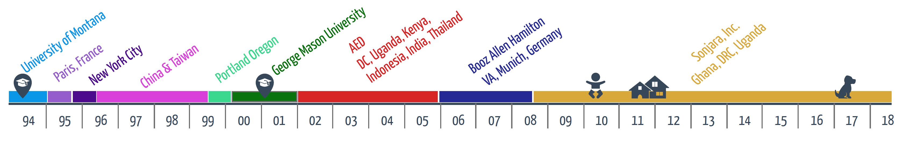

margiej12@gmail.com
margiej12@gmail.com
 202.251.0009
202.251.0009


My Journey
Meet Me in
Montana
I spent the first half of my life living in Butte, Montana and received my Bachelor's Degree at the University of Montana in Missoula. Growing up in a large family in the Big Sky country undoubtedly influenced who I am, how I interact with others, and my design style. I still spend my summers in Montana. Learning &
Travel
My 20s were about stepping outside of my comfort zone. I studied abroad in Burgandy and Paris, France. I volunteered in East Harlem, New York City. I studied Chinese in Shandong, China and eventually spent two years in Taipei, Taiwan teaching English, and designing communications for a upscale hotel. Teaching, traveling, and designing shaped the person I am today. Learning New Technologies
Learning New Technologies
I transitioned from my travels in Asia to what was then called the Silicon Forest - Portland, Oregon. The internet was still relatively new and transforming everything. Learning on the job as a tech support agent and taking coursework at Portland State University, I decided to study educational technology. I moved to Virginia and received my Master's Degree at George Mason University in Instructional Design and Development. Here I built a foundation in learning and design.  TechnologY & International Development
TechnologY & International Development
An opportunity at the Academy for International Development in Washington, DC combined my love for international travel, my passion to do good in the world, and my new found technology skills. I spent 5 years working on exciting USAID funded ICT-in-Education projects that took me to India, Jamaica, Jordan, Indonesia, Uganda and Kenya. learning &
learning &
Consulting
By the mid-2000s, I was ready to give my passport a rest. I took an opportunity at Booz Allen Hamilton to work as a Senior Learning Strategist. I designed facilitator-led training, managed e-learning vendors and collaborated with bright and ambitious colleagues. learning, Design & International development
learning, Design & International development
By 2008, an opportunity to go back working on USAID-funded projects came my way. As part of a woman-owned, small business, I was able to hone my skills in not only in instructional design, but also HTML/CSS, user interface design and technical project management. I've worked on projects focused on Gender Equality, Wildlife Crime, Water, Biodiversity, Sex Education, and Maternal and Child Health. During this time I also become a mother, a home owner and a pet owner.  looking for new opportunities
looking for new opportunities
My goal is to find new opportunities that use my skills, my experience, and enthusiasm. I would love to be part of a dynamic and innovative design team working to help solve some of the world's most pressing and difficult problems.
 WEB APPLICATION
WEB APPLICATION PROJECT
PROJECT  INSTRUCTIONAL
INSTRUCTIONAL COMMUNICATIONS/
COMMUNICATIONS/